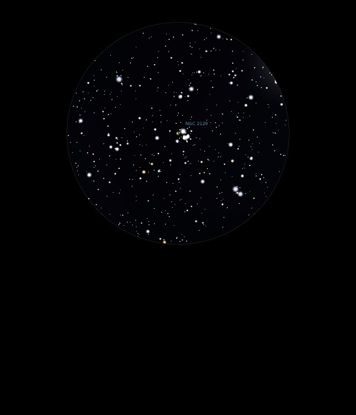

NGC 2129
Open Cluster in Gemini
NGC 2129
Mag 6.7
25/11/13
A small, sparse but very neat Open Cluster forming a halo
around two brighter stars, HIP 28513 of Mag 7.35 and HIP 28510
of Mag 8.2
08/01/16
This is a very small Open Cluster but really interesting
At it's core are two stars, HIP 28513 at Mag 7.35 and HIP 28510
at Mag 8.20
Surrounding them is what appears at first to be a nebula but
with inverted vision and moments of good seeing tiny pinpricks
appear among the slightly brighter 10th and 11th Mag members
Worth another look when higher and when the sky is 'darker'
11/01/16
The two stars of Mags 7.35 and 8.20 which dominate this cluster
set it off and really do give the impression that they are
surrounded by nebulosity
The furthest out of three 'satellite' clusters of M35, the other
two being NGC 2158 and IC 2157 and all in a line, nearly!
However they are not related to M35